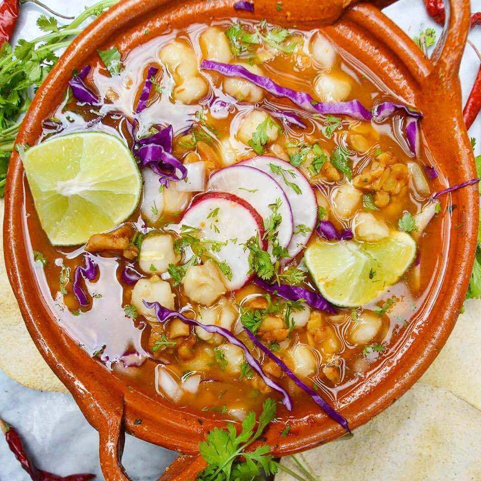

Pozole |
||
|---|---|---|
|  | El pozole (del náhuatl pozolli, de tlapozonalli, «hervido» o «espumoso»,1 o del cahíta posoli, «cocer maíz»), o caldo de maíz, es un plato tradicional mexicano, un caldo hecho a base de granos de maíz de un tipo conocido comúnmente como cacahuazintle, al que se agrega, según la región, carne de pollo o de cerdo como ingrediente secundario.1 De esta preparación básica existen variaciones por todo el territorio mexicano y algunas cocinas de América Central. Por ejemplo, en México el pozole verde es del estado de Guerrero y el rojo de Sonora, Sinaloa, Nayarit, Guanajuato, Jalisco y Tlaxcala.2 A este versátil platillo se le puede acompañar con diversos ingredientes, que varían según la zona y costumbres.345 En América del Sur existe un plato con el cual guarda parecido, llamado patasca. |
|